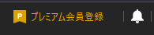
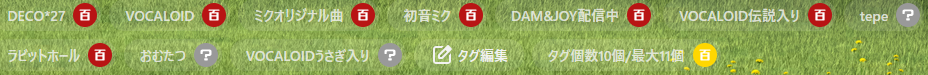
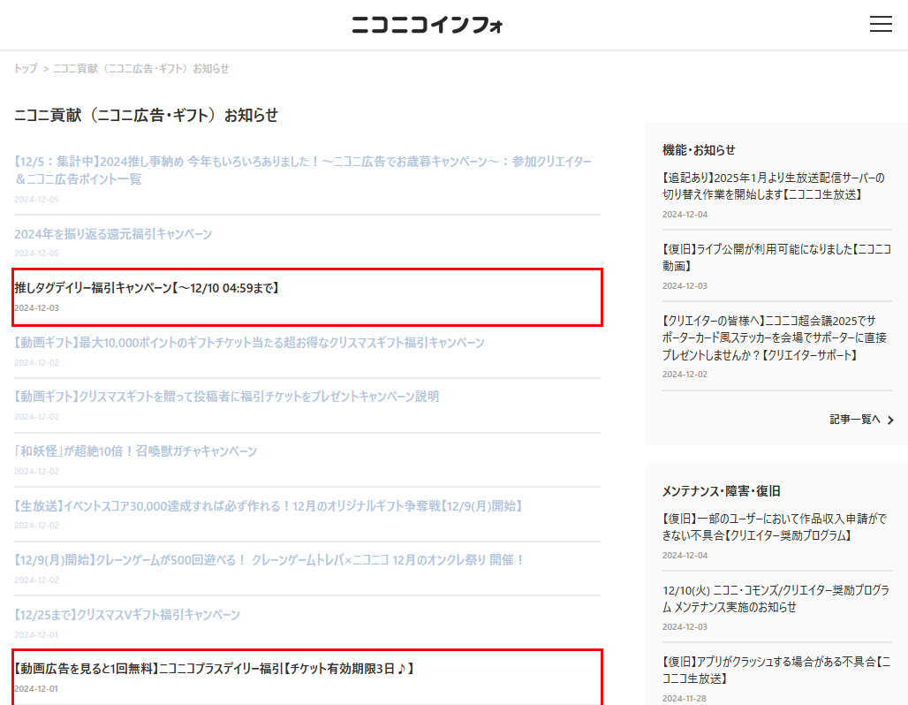
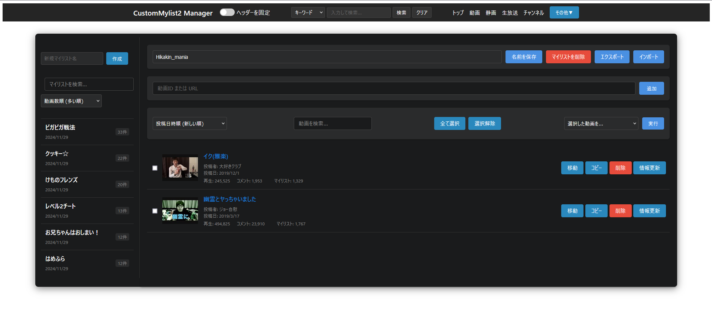
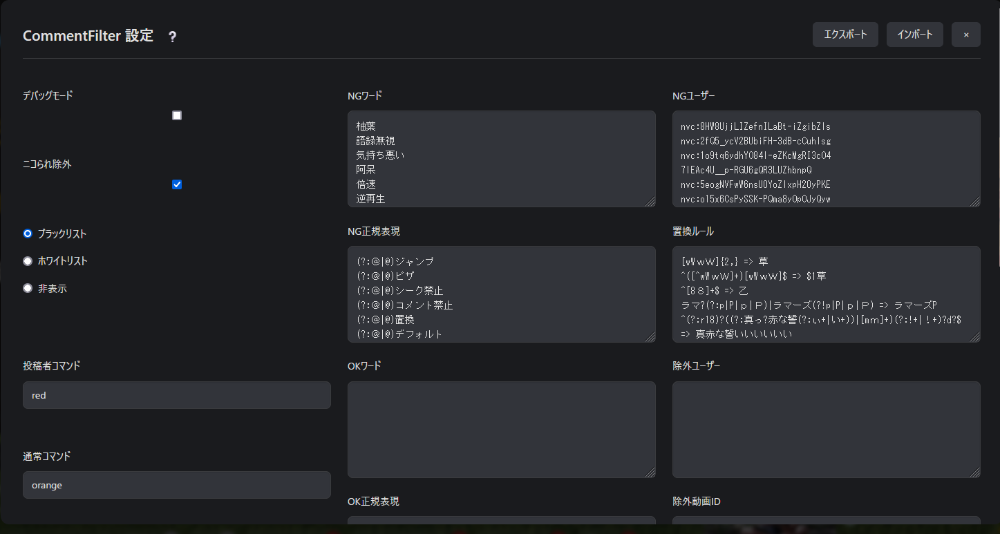
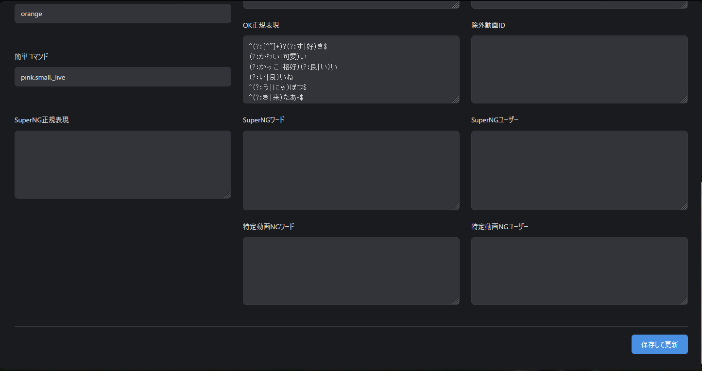
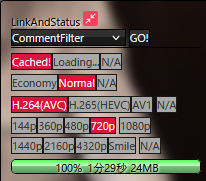

作者：◆awd5z.AlOFJq
更新日：2024 年 12 月 06 日
注意！
毎回リリースノートを確認してください。
各 nlFilter はや
<link rel="...">で
<script src="...">から呼び出す形になっているものが多いため、ファイルの更新日が変わっていないことがあることに注意してください！ 更新による差分を見たいときはWinMergeが便利です。
./local/CustomFilters/*
また、nlFilters フォルダから削除された nlFilter(txt)や、local/CustomFilters から削除された css,js ファイル、または中身のないファイル群は deprecated(廃止予定)又は abolition(廃止)にしているため削除してください。
免責事項
全てのフィルタは同時使用を前提に設計しているため、自分で勝手に取捨選択した結果動作しなくても動作保証外・サポート（返信）対象外
とします。
基本的にこのフィルタは私が使用しているものをお裾分けしているという形を取っている為、あなたが自分で変更・改変・改造した結果不具合が起きても私は一切の責任を負いません。自身の力に於いて解決
してください。困ったらクリーンインストール！
アンライセンス・ライセンス(unlicense license)を宣言します。パブリックドメインの CC0と同等です。改変・再配布・商用利用・非商用利用等自由、但し NicoCache_nl の公式アップローダ以外で配布する場合私の名前を明記してくれると嬉しいです。
Unlicense License
This is free and unencumbered software released into the public domain.
Anyone is free to copy, modify, publish, use, compile, sell, or
distribute this software, either in source code form or as a compiled
binary, for any purpose, commercial or non-commercial, and by any
means.
In jurisdictions that recognize copyright laws, the author or authors
of this software dedicate any and all copyright interest in the
software to the public domain. We make this dedication for the benefit
of the public at large and to the detriment of our heirs and
successors. We intend this dedication to be an overt act of
relinquishment in perpetuity of all present and future rights to this
software under copyright law.
THE SOFTWARE IS PROVIDED "AS IS", WITHOUT WARRANTY OF ANY KIND,
EXPRESS OR IMPLIED, INCLUDING BUT NOT LIMITED TO THE WARRANTIES OF
MERCHANTABILITY, FITNESS FOR A PARTICULAR PURPOSE AND NONINFRINGEMENT.
IN NO EVENT SHALL THE AUTHORS BE LIABLE FOR ANY CLAIM, DAMAGES OR
OTHER LIABILITY, WHETHER IN AN ACTION OF CONTRACT, TORT OR OTHERWISE,
ARISING FROM, OUT OF OR IN CONNECTION WITH THE SOFTWARE OR THE USE OR
OTHER DEALINGS IN THE SOFTWARE.
For more information, please refer to Unlicense.org
CC0 1.0 全世界
クリエイティブ・コモンズは法律事務所ではなく、法律業務を提供するものではありません。 この文書の配布は、法律家と依頼者の関係性を形成するものではありません。クリエイティブ・コモンズは、この情報を現状有姿の状態で提供します。 クリエイティブ・コモンズは、この文書の利用、もしくはこの文書の下に提供される情報又は作品に関し、いかなる保証も行わず、この文書もしくはこの文書の下に提供される情報又は作品の利用の結果生じた損害に関するいかなる責任も負いません。
目的の説明
世界の大部分の法域の法律は、新規の著作物および（または）データベース（以下、それぞれを「作品」という。）の創作者およびその承継人（以下、あわせて「権利者」という。）に対して、独占的な著作権および関連する権利（定義は後述する。）を自動的に与えている。
権利者の中には、創作的、文化的、科学的作品の共有地（以下「コモンズ」という。）に貢献する目的で、作品についての自己の権利を恒久的に放棄することを望む者がいる。コモンズでは、一般の人々が、確実に、かつ後発的な侵害の主張をおそれることなく、そのような作品をベースに使い、改変し、他の作品に取り込み、再利用し、再配布することができる。これらの行為は、どのような態様によっても、商業目的を含むどのような目的でも、可能な限り自由に行うことができる。
このような権利者は、フリー・カルチャーの理念を普及させ、創造的、文化的、科学的作品のさらなる創造を促すことでコモンズへ貢献することができる。あるいはまた、他人による利用や他人の活動を通じて、自己の作品の評価の獲得や、自己の作品のさらなる流通を実現するために、コモンズへ貢献することができる。
上記ならびに（または）その他の目的および動機のために、作品にCC0を付する者（以下「確約者」という。）は、追加の対価または補償を一切求めることなく、確約者が本作品の著作権および関連する権利の権利者である限り、すすんで本作品にCC0を適用し、CC0の規程に従って、自らの作品を公に配布する。この行為は、確約者が、本作品について確約者が所有している著作権および関連する権利、CC0の意味、およびCC0がこれらの権利に及ぼす法的効果を理解したうえで行われる。
A Work made available under CC0 may be protected by copyright and related or neighboring rights ("Copyright and Related Rights"). Copyright and Related Rights include, but are not limited to, the following:
CC0の下で利用可能とされる作品は、著作権、および関連しまたは隣接する権利（本規程において「著作権および関連する権利」という。）によって保護されている場合がある。著作権および関連する権利には以下に掲げるものを含むが、これに限られない。
確約者は、適用される法令に基づいて許容され、かつこれに反しない最大限の範囲で、明示的に、完全に、恒久的に、取消不能および無条件の形で、現に知られているか否かにかかわらず、確約者の本作品の著作権および関連する権利、ならびに関連する請求および請求原因（現在および将来の請求および請求原因を含む。）を放棄し、または主張しない（以下、あわせて「権利放棄」という。）。その権利放棄は、(1)世界中のあらゆる地域で、(2)適用される法令または条約により与えられる最大限の期間（将来の期間延長を含む。）について、(3)現在または将来のあらゆる媒体について、かつ複製回数を問わず、(4)商用、広告、または宣伝目的を含むあらゆる利用目的について行うものとする。確約者は、公衆に属するあらゆる者の利益のために、確約者の相続人および承継人に不利益が及ぶ形であっても、権利放棄を行う。この権利放棄は、「目的の説明」において述べたような公衆による本作品の平穏な享受を害するような撤回、取消、解約、解除その他実体法上または衡平法上の訴えの対象としないことをまさに意図して行うものである。
導入例
localフォルダはlocalフォルダに,nlFiltersはnlFiltersフォルダに上書きする。入れたくないフィルタがある場合であっても全フィルタの同時使用を前提に設計している為そのまま我慢して使用してほしい。フィルタの抜き差しは上級者向けなのでnlFiltersの文法を完全に理解し、HTML,CSS,Javascriptの知識が十分にあり、デベロッパーコンソールを十全に扱え、自己解決できる者だけが自己の責任で対応
すること。自分自身で勝手に取捨選択した結果動作しなくてもそれはサポート対象外でありこのフィルタまとめを使用した時点で「自分で改造した結果動作しなくてもサポートを放棄する」これに同意したものと見做す。未改造であるならこの限りでは無い。
私は基本的に全てのフィルターをデフォルト状態で運用することを前提に設計している為、個々のフィルターだけで運用出来るかは不明であり、将来的に個々のフィルターで運用できるかどうか試すことも無い事をここに明記する。
アップデート時は基本的には上書きインストールで大丈夫なことが多いが、ときどき廃止したファイルはアップデートファイルの中から削除していたり、上書きインストール前提で同名ファイルの中身を空にしていたりすることがあるので「クリーンインストールしたほうが良い」という注意書きがあればそれに従うこと。一番確実な方法は、一旦nlFiltersから 100*~199*.txt を削除し、test_nlFiltersのダウンロードファイルに倣ってlocalの中身を空にした上でアップデートファイルをコピー
クリーンインストール
と呼ぶ)。当然だが以下のフィルタはほとんどすべて/local/以下から呼び出す形になっている為nlFilter単体では動作せず、/local/のファイル群もインストールが必要になる。
※もし助けが必要な場合には、又は特殊なインストール手順が必要なものについては各テキストファイル/css/js内部に方法がコメントとして書かれている場合もあるのでよく読んでからスレッドに書き込みすること。100_Library.txt
common.js(/CustomCommon/common.js)とJQuery等を*.nicovideo.jp/*に挿入するフィルタ。common.jsはほとんどのフィルターで必須ファイルとなっている。
101_PremiumRecruitHide.txt
|  |
102_WatchPageMisc.txt

/watch/以下で動作するフィルタで、現在背景を変更する機能とタグカウンター機能の提供のみ。
103_WatchPageMiscBackground.txt
 |
 |
104_WatchPageDebug.txt
デバッグ用
105_NicoAdsTickets.txt

ニコニコインフォでの、無料で取得可能そうなニコニ広告用チケットリンクを強調表示するフィルタ。
106_CommonHeaderIconHide.txt
スクリーンショットやデスクトップキャプチャに備えて、ユーザー名を非表示にするフィルタ。
107_RankingFilter.txt
 ランキングにフェッチリンクを追加するフィルタと不快な動画を非表示にするフィルタ。
ランキングにフェッチリンクを追加するフィルタと不快な動画を非表示にするフィルタ。
108_SearchResultMultiColumnist.txt
 タグ検索(tag)、キーワード検索(search)、新着動画(newarrival)、新着コメント(recent)ページで動画を 8 列表示。
タグ検索(tag)、キーワード検索(search)、新着動画(newarrival)、新着コメント(recent)ページで動画を 8 列表示。
109_CustomMylist2Filter.txt

カスタムマイリスト機能を追加するフィルタ。https://www.nicovideo.jp/local/CustomMylist2/html/manager.htmlでアクセス可能。
110_CommentFilter.txt   基本的に、UIの説明通りにNGワード等を入力して保存するだけ。CommentFilterを表示させるにはLinkAndStatusのリンクが必要。?マークを押すと説明ページに飛ぶ。またテキストフィールドの上の項目名にマウスをホバーさせると詳細な情報が表示される。
111_PlaybackrateChanger2.txt
 |
 |
112_VideoUseForNeedPayments.txt
 有料で購入したアニメや映画、特撮などの動画をNicoCache_nl/cacheフォルダ（デフォルトの場合）に既にキャッシュとして保存している場合、有効期限が切れてもこれがあれば視聴可能となる。
有料で購入したアニメや映画、特撮などの動画をNicoCache_nl/cacheフォルダ（デフォルトの場合）に既にキャッシュとして保存している場合、有効期限が切れてもこれがあれば視聴可能となる。
操作欄は使用不能になるためPlaybackrateChanger2は必須になる。
再生されない場合、多くの場合タイミングが問題なのでF5かCtrl+F5(キャッシュを無視したハードリロード)で解決する。112_VideoUseForNeedPayments.txt の本体は needPaymentsVideo.js である。 /local/CustomCache/ フォルダ以下に （動画ID）.hls フォルダまたは （動画ID）.mp4 キャッシュを置いてもキャッシュを利用して再生する。※※※注意※※※ フォルダ名または動画ファイル名に動画タイトルや画質、音質、lowその他余計なものが含まれていると再生できないため必ずそれらを削除すること。
113_LinkAndStatus.txt

動画ダウンロードリンク、コメントダウンロードリンク、キャッシュ削除リンク、キャッシュの詳細を表示する「nlMediaInfo」（最新版 nlMediaInfo が導入されている場合のみ）、その他たくさんのリンクを/watch/ページ以下で提供、基本的には全ページで動作する。
199_README.md
使い方の説明。(Markdown language 版)
199_README.html
使い方の説明。(html 版)
例：
コメントアウトされている（無効な）状態
#[Replace]

有効な状態
[Replace]


https://www.nicovideo.jp/local/background.avif
の部分を、
https://www.nicovideo.jp/local/（任意のディレクトリ階層構造）/(任意の背景画像ファイル名).(ブラウザが解釈できる拡張子,jpg,jpeg,png,webp,gif,avifなど)
に変更すればいい。例えば
local/test/hoge/mywallpaper.webp
に画像ファイルを置いたら
https://www.nicovideo.jp/local/test/hoge/mywallpaper.webp
にする。
※nico_wallpaperGと併用している場合衝突が起きるのでそのときは、どちらを優先するかによるが「wr_BackgroundHTML5.css」をどこかに退避させ,「wp1.css」に以下を追記する。（デフォルトの場合）
:root{
--bg-img:url('https://www.nicovideo.jp/local/nico_wallpaperG/wp1.jpg') repeat center fixed !important;
}
ブラウザでや「サイトデータの削除」や「オフライン作業用データの削除」を行うとマイリストの中身も消去される可能性が高いので注意！これらを実行する前に必ずエクスポートすること。
上記 110_CommentFilter.txt の項に詳しい説明があります。同様にブラウザでや「サイトデータの削除」や「オフライン作業用データの削除」を行うと CommentFilter の設定も消去される可能性が高いので注意されたい。これらを実行する前に設定を必ずエクスポートすること。
ビルドツール
Java
暗号化・証明書関連
メディア情報表示
ウェブ開発
Mozilla Developer Network MDN Web Docs
マークダウン記法文法
ファイル差分表示
インデックス化と検索が非常に高速な検索ソフト
いろいろと楽なテキスト編集・プログラミングソフト
言わずと知れた高機能画像編集ソフト
なんとなく使っている画像ビューア
コーデックインストール不要の高機能メディアプレーヤー(mpv の GUI フロントエンド)
Chrome と Edge の影に隠れているブラウザソフト
VTF ファイルのエクスプローラーでのサムネイルを表示するシェル拡張機能
シングルプレイヤーゲームのトレーナー
アニメ画像系アップスケーラー
実写系アップスケーラー
5 ちゃんねる互換スレッドブラウザソフト
dat 取得
F-droid のモダンストアアプリ
画像ビューア
Youtube・NicoNico 等のダウンローダ
Youtube・NicoNico・BiliBili 等のクライアントソフト
音楽ストリーミングサービス
今後はそちらを参照してください。